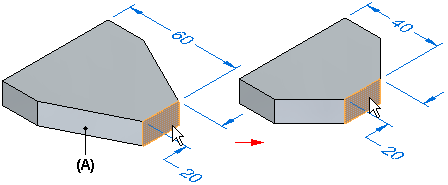
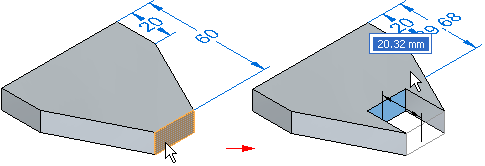
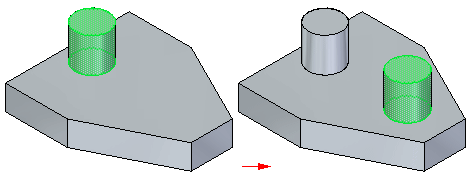
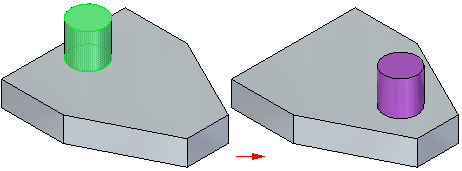
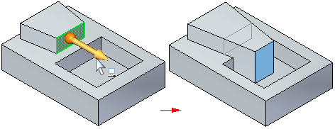

Move or Rotate command bar
-
Available Actions
Lists alternate actions which are available for the selected element, if any. The options in the Available Actions list change based on what you have selected. For example, when you have selected a single planar face in a part document, options are presented for moving the face, extruding or revolving the face to construct another feature, or to define a relationship between the selected face and another face on the model.
-
Connected Faces
Specifies how the faces connected to the selection adapt during the modification.
-
Extend/Trim
Modifies the model by trimming and extending adjacent faces.
Adjacent faces (A) are extended or trimmed as required, but will maintain their original orientation. The size of the selected face can change.

-
Tip
Modifies the model by trimming, extending, or changing the current orientation of connected faces. In some situations, this can cause the current orientation of connected faces (A) to tip or change their angle with respect to the selected face. The size of the selected face does not change.

-
Lift
Lifts the select set and adds faces to the model. The selected face and adjacent faces do not change.

-
-
Copy
Specifies that you want to copy the selected faces during the move/rotate operation. In this example, the cylindrical face and circular planar face were selected.

-
Detach Faces
Specifies that you want to detach the selected faces from the model during the move/rotate operation. In this example, the cylindrical face and circular planar face were selected. Notice that the detached faces are displayed using the Construction color.

-
Keypoints
Sets the type of keypoint you can select. You can use a keypoint on other existing geometry to help you define how you want to move or rotate a face. The available keypoint options are specific to the command and workflow you use.

Sets the any keypoint option.

Sets the end point option.

Sets the midpoint option.

Sets the center point option. You can select the center point of an arc or circle.

Sets the tangency point option. You can select a tangent point on an analytic curved face such as a cylinder, sphere, torus, or cone.

Sets the silhouette point option.

Sets the edit point on a curve option.

Sets the no keypoint option.
-
Precedence
Specifies whether the faces in the select set or the unselected faces have precedence during the modification. Faces that have priority are regenerated last during the synchronous operation and therefore, tend to be preserved in the resultant model.
The options which are available can change based on the active environment.
-
Select Set Priority
Specifies that the selected and moving faces have priority over non-moving faces. Notice that the faces adjacent to the face being moved are extended, and the non-moving faces are trimmed when this option is set.

-
Model Priority
Specifies that the non-moving faces have priority over selected and moving faces. Notice that when this option is set, the face being moved can only be moved until it is coincident with the cutout, because the non-moving faces have priority.

-
None
No face interactions will occur.
-
-
Move Subassembly Components
This option controls how occurrences within subassemblies are modified.
-
When set, you can select and move individual occurrences within subassemblies, as well as selected faces on parts.
Only if all component occurrences (or the subassembly base reference plane or base coordinate system) are selected will the entire subassembly move.
-
Clear this option to transform all occurrences in the subassembly as a single unit. You can select an occurrence, or the subassembly base coordinate system, or its base reference plane.
An occurrence can be selected directly or if all its faces are selected. Parts within the subassembly that have only faces selected will not be modified because they move along with the subassembly.
-
How do I
Attach a feature or set of facesDetach a feature or set of faces
Learn more
Detaching and attaching faces and featuresLook up more details
Move command (3D)Attach command
Detach command